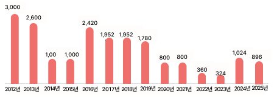
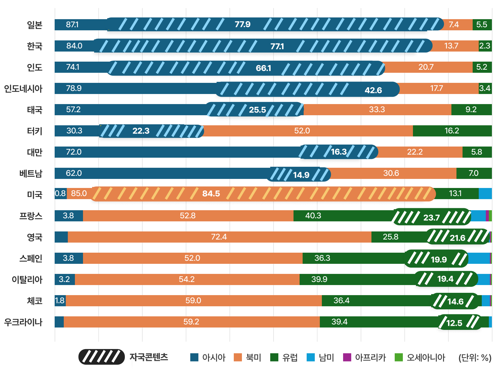
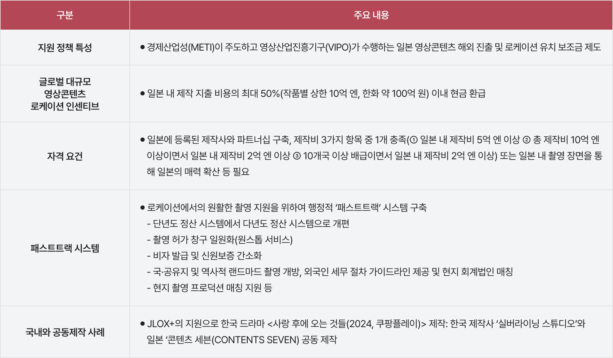
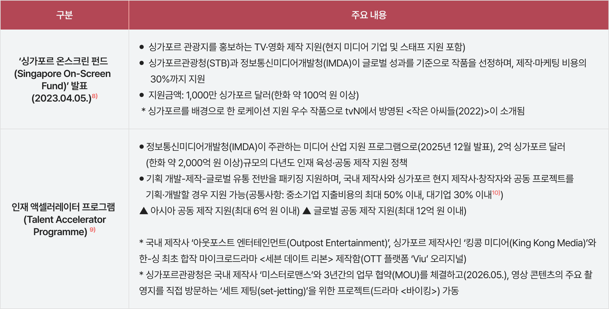

일러두기
⦁
자료 출처: 플릭스패트롤(FlixPatrol, flixpatrol.com)
⦁
자료 수집 시점: 2026년 5월 11일
⦁
분석 기간: 2026년 1분기(2026.1.1.~3.31)
⦁
분석 대상 플랫폼: 넷플릭스(Netflix), HBO Max, 아마존 프라임 비디오(Amazon Prime Video)
단, Disney+의 2026년 1분기 데이터는 제공하지 않아 분석에서 제외함
⦁
선호도 값(preferences, %) 산출 방식: 분석 기간 동안 각 지역에서 TOP 10에 진입한 모든 작품을 대상으로 전체 인기점수 중 특정 범주가 차지하는 점수의 합계를 백분율로 환산함
⦁
선호도 값의 해석: % 값이 클수록 해당 지역에서 특정 국가 또는 사업자가 제작한 콘텐츠의 선호가 높음을 의미
⦁
인기 점수(ranking point, 점) 산출 방식: 매일 특정 일, 주, 월, 연도에 대한 계산이 업데이트 되며, 국가별 인기점수는 해당 국가의 넷플릭스가 합산한 자체 순위를 바탕으로 1위 10점, 2위 9점, 3위 8점… 순으로 포인트를 부여한 후 이를 합쳐서 산출함
⦁
본 분석의 지역, 장르 구분은 플릭스패트롤 분류 기준을 적용함
글로벌 OTT 사업자 Netflix, HBO MAX, Amazon의 2026년 1분기 선호도를 보면, 세 플랫폼 모두 북미 콘텐츠 비중이 가장 높은 것으로 나타났다. 그러나 플랫폼별로 좀 더 들여다보면 넷플릭스보다는 HBO MAX와 아마존 프라임에서 북미 지역 콘텐츠 선호도가 더 높았다. 해당 수치는 2026년 1분기 지역별 TOP10 데이터를 종합하여 분석한 일종의 시청자 취향 통계라고 할 수 있다. 따라서 각 플랫폼별로 특정 권역의 콘텐츠들이 해당 권역의 시청자들에게 얼마나 인기 있는가를 측정한 간접 지표로 볼 수 있다.
플랫폼별로는 넷플릭스의 경우 북미 지역 콘텐츠 선호도가 58.2%며, 유럽이 19.3%, 아시아가 18.2% 순으로 나타났다. 해당 데이터를 보면 유럽만큼이나 아시아 지역 콘텐츠 선호도가 높은 것을 알 수 있다. 반면에 HBO MAX는 북미가 77.9%, 유럽이 14.3%로 나타났으며, 아마존 프라임은 북미가 81.3%, 유럽이 16.1%로 나타나 북미와 유럽의 두 권역 콘텐츠에 대한 선호도가 집중되어 있었다.

[그림 1] 2026년 1분기 글로벌 OTT 사업자의 권역별 콘텐츠 선호도
(출처: 플릭스 패트롤 홈페이지 자료 재구성(www.flixpatrol.com))
2026년 1분기 각 권역 내에서 특정 국가의 콘텐츠가 플릭스패트롤 차트에서 차지한 점수 비중을 기준으로 자국 콘텐츠 선호를 넷플릭스 플랫폼을 대상으로 살펴본 결과, 미국 넷플릭스 차트 점수 중 미국산 콘텐츠의 비중이 84.5%로 가장 높았으며, HBO MAX와 아마존 프라임 역시 미국의 자국 콘텐츠 선호가 각각 90%, 95.3%로 압도적으로 높게 나타났다. 즉 미국 OTT 플랫폼 소비의 자국 콘텐츠 쏠림이 매우 강력함을 알 수 있다.
이와 같은 현상은 아시아와 유럽 지역에서도 동일하게 나타난다. 넷플릭스를 기준으로 보면, 일본에서의 아시아 콘텐츠 선호 비중이 87.1%, 자국 콘텐츠 선호 비중은 77.9%로 아시아 국가 중 가장 높았다. 한국 역시 아시아 콘텐츠 선호 비중이 84%, 자국 콘텐츠 비중이 77.1%로 매우 높게 나타났다. 그 외에도 인도네시아, 인도, 대만에서의 넷플릭스 콘텐츠 중 아시아 콘텐츠 선호 비중이 70%를 넘었으며, 특히 인도는 66.1%가 자국 콘텐츠를 선호하는 것으로 나타났다. 유럽의 경우는 유사 문화권인 북미 콘텐츠 선호 비중이 유럽 콘텐츠 선호 비중보다 대체로 높게 나타났다. 유럽 국가 중 자국 콘텐츠 선호가 가장 높은 곳은 프랑스와 영국으로 각각 23.7%, 21.6%로 나타났다. 그 외에 스페인, 이탈리아, 체코, 우크라이나가 넷플릭스 콘텐츠 중 자국 콘텐츠 선호 비중이 10% 이상을 차지하는 것으로 나타났다.
한편, 북미와 유럽을 전략적으로 공략하고 있는 HBO MAX의 경우 미국의 자국 콘텐츠 선호도가 90%로 가장 높았으며, 다음으로 폴란드 27.6%, 노르웨이 26.6%, 덴마크 15.6% 순으로 나타나 동유럽과 북유럽에서의 자국 콘텐츠 선호가 높은 특징을 보이고 있었다. 아마존 프라임의 경우 미국과 서유럽 중심으로 강세를 보였는데, 아시아에서는 유일하게 일본이 자국 콘텐츠 선호 비중 17.3%로 높게 나타났다.

[그림 2] 2026년 1분기 넷플릭스 플랫폼의 국가별 자국 콘텐츠 선호도
* 자국 콘텐츠 선호 비중이 10% 이상인 국가를 정리함
(출처: 플릭스 패트롤 홈페이지 자료 재구성(www.flixpatrol.com))
2026년 1분기 넷플릭스 차트 선호 비중을 보면 넷플릭스 오리지널 콘텐츠가 56.3%로 가장 많았다. 다음으로 기타로 분류된 사업자가 제작한 콘텐츠 비중이 30.2%로 많았는데([그림 4] 참조), 이는 대부분 해당 지역 국가의 미디어 사업자가 제작하고 배급한 콘텐츠이거나 같은 권역의 미디어 기업 작품이다. 각 국가별로 더 자세히 들여다보면 넷플릭스 오리지널 선호 비중이 70% 이상으로 높은 곳은 우크라이나(72.0%), 세르비아(72.7%), 포르투갈(70.8%), 헝가리(73.6%)로 자국 영상 콘텐츠 제작 인프라가 다소 미흡한 국가임을 알 수 있다.
반면에 자국 콘텐츠 선호 비중이 높은 일본, 인도네시아, 한국은 넷플릭스 차트 순위에서 차지하는 넷플릭스 오리지널 콘텐츠 선호 비중이 각각 21.6%, 37.8%, 39.3%로 가장 낮게 나타났다([그림3] 참조).
⦁
일본: 기타로 분류된 사업자가 제작한 콘텐츠에 대한 선호 비중이 75.1%로 가장 높은데 2026년 1분기에 일본 넷플릭스 상위를 차지한 TV쇼를 애니메이션이 압도적인 강세를 보인다. <주술회전(Jujutsu Kaisen)>, <지옥락(Hell's Paradise)>, <장송의 프리렌(Frieren: Beyond Journey’s End)>, <신참 아재 모험가, 최강 파티에서 죽을 정도로 단련해서 무적이 된다(The Ossan Newbie Adventurer, Trained to Death by the Most Powerful Party, Became Invincible)> 등이 상위 랭킹을 차지했는데 이들 모두 일본 제작위원회에서 제작한 프로그램으로 현지 방송사나 애니메이션 전문 채널을 통해 유통되고 있다.
⦁
인도네시아: 61.1%가 기타로 분류되었으며, 동기간 인도네시아 넷플릭스 차트 상위 콘텐츠 중 넷플릭스 오리지널이 아닌 프로그램을 보면 국내 SBS의 <신이랑 법률 사무소>, 일본 애니메이션 <주술회전>, 인도네시아 지상파 방송사 RCTI와 동시 방영된 드라마 <테리카트 잔지(Terikat Janji)>, 중국 아이치이(iQIYI)의 웹소설 원작 드라마 <축옥(逐玉, Pursuit of Jade)> 등이 있다.
⦁
한국: 56.2%가 선호 비중이 기타 사업자로 분류되는데 2026년 1분기 TV쇼 상위 프로그램 중 넷플릭스 비독점 콘텐츠를 보면, SBS의 <신이랑 법률 사무소>, KBS <은애하는 도적님아>, MBN의 <천하제빵>, SBS Plus와 ENA가 공동제작하는 <나는 솔로> 등 국내 방송사의 작품이 선호되고 있는 것으로 나타났다.

[그림 3] 주요 국가의 넷플릭스 오리지널 콘텐츠 선호 비중
(출처: 플릭스패트롤 홈페이지 자료 재구성(www.flixpatrol.com))
한편 2026년 1분기에 전 세계 HBO Max 이용자들이 가장 선호한 콘텐츠는 51.1%의 선호도 비중을 차지한 파라마운트 픽처스(Paramount Pictures) 작품이다. 사실상 HBO Max의 모기업인 워너 브라더스 디스커버리(WBD)가 파라마운트 픽쳐스의 모기업인 파라마운트 스카이댄스(Paramount Skydance)와 합병을 확정 지은 상태라는 점을 고려하면 오리지널 콘텐츠의 영향력으로 해석할 수 있다. 그 외에도 소니픽처스 콘텐츠(Sony Pictures)가 21.6%, 워너브라더스 픽처스(Warner Bros. Pictures)의 콘텐츠가 13.2%의 선호 비중을 보여 HBO Max 플랫폼 이용자가 많이 소비한 것으로 나타났다([그림 4] 참조).

[그림 4] 2026년 1분기 글로벌 OTT 이용자의 사업자별 콘텐츠 선호도
(출처: 플릭스패트롤 홈페이지 자료 재구성(www.flixpatrol.com))
K-콘텐츠의 세계화에도 불구하고 아시아 편중 현상과 서구권의 문화적 장벽은 여전히 견고하다. 오리지널 콘텐츠로 승부수를 던진 넷플릭스가 현지화 전략을 통해 각 국의 콘텐츠 소비 시장을 장악하고 있다고 하지만 지난 2026년 1분기 선호도 비중을 보면 흥미로운 지점이 발견된다. 한국과 일본처럼 콘텐츠 경쟁력을 갖춘 국가에서는 현지 방송영상 사업자들이 글로벌 OTT를 활용해 강력한 존재감을 발휘하고 있기 때문이다. 이 가운데 한류의 전략적 요충지인 인도네시아의 가파른 성장세가 특히 주목된다. 한편, 국내 안착에 난항을 겪었던 HBO Max가 파라마운트와의 합병을 통해 향후 글로벌 스트리밍 비즈니스 전략을 어떻게 재편할지도 지켜볼 부분이다.